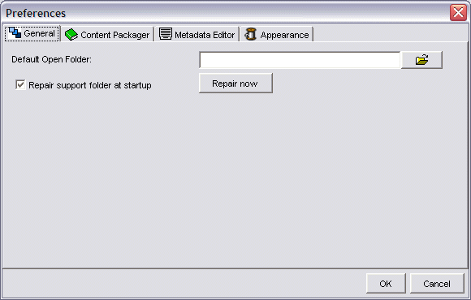
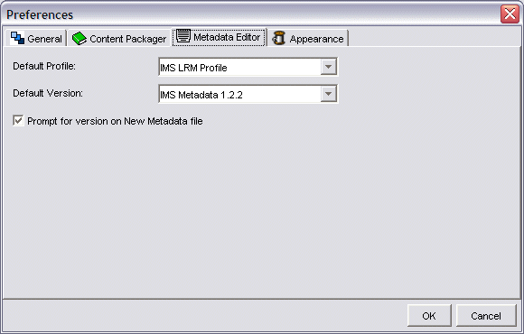
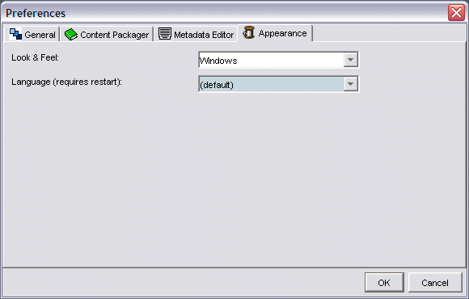

Tools Menu
The Tools Menu has only a single item at present:

Options
The preferences pane consists of 4 tabbed windows.
General
On this tab you can specify a default 'Open' directory for the RELOAD Editor. You can also choose this file to repair the support folder, either immediately, or at startup.

Content Packager
On this tab you can choose whether to show or hide SCORM and Resources nodes. You can also choose a default IMS CP Profile and default SCORM profile.

Metadata Editor
On this tab you can specify a default IMS Metadata profile and version. You can also set whether the application asks you each time a new metadta record is created.

Appearance
The Appearance tab allows the user to choose the overall look of the RELOAD Editor software.

The User can choose between three 'look and feel' options as follows: